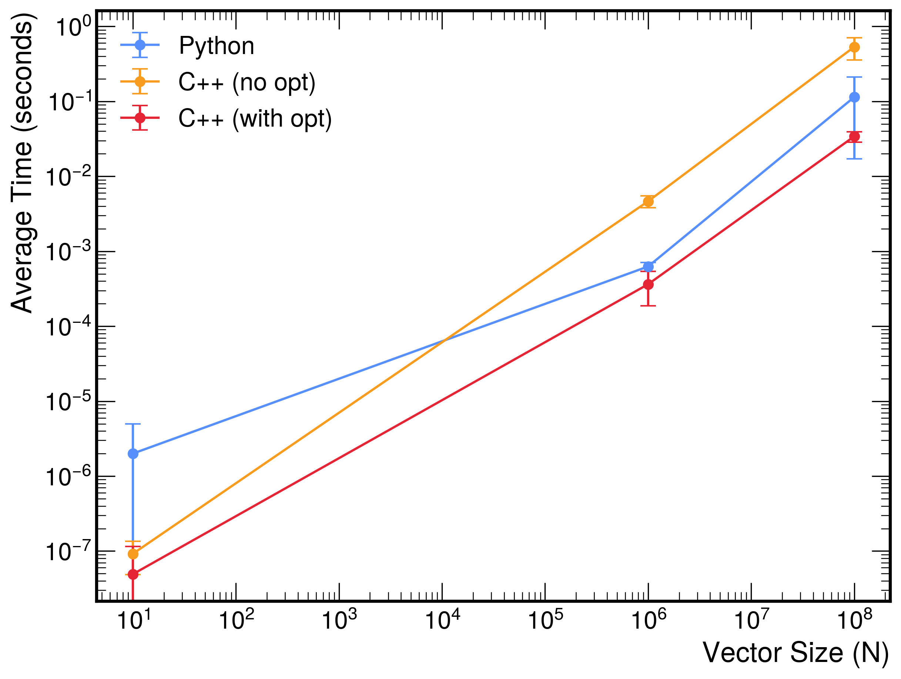

Vector Sum
This page demonstrates the vector sum operation in both Python and C++. The function computes the vector sum
\[
d = a \cdot x + y,
\]
where \(x\) and \(y\) are vectors of dimension \(N\). The test suites measure the execution time and verify that every element equals the expected result.
Python implementation
| vector_sum_python.py |
|---|
| import numpy as np
def vector_sum(a: float, x: np.ndarray, y: np.ndarray) -> np.ndarray:
"""
Compute the vector sum d = a * x + y, where x and y are vectors.
Parameters:
a (float): Scalar multiplier.
x (np.ndarray): A vector.
y (np.ndarray): A vector.
Returns:
np.ndarray: The resulting vector d.
Raises:
ValueError: If x and y do not have the same shape.
"""
if x.shape != y.shape:
raise ValueError("Vectors x and y must have the same shape.")
return a * x + y
|
| test_vector_sum_python.py |
|---|
| import time
import math
import numpy as np
from vector_sum_python import vector_sum
def run_vector_sum_test(n: int, n_iter: int = 1):
"""
Run the vector sum computation for vectors of size n, measure the execution time
over n_iter iterations, and verify that each element equals the expected value
within a defined tolerance.
Parameters:
n (int): The size of the vectors.
n_iter (int): The number of iterations for timing measurement (default 1).
Raises:
AssertionError: If any element of the computed vector does not match the expected value.
"""
a = 3
x_val = 0.1
y_val = 7.1
expected_value = 7.4
tolerance = 1e-9
# Create the input vectors of size n.
x_vec = np.full(n, x_val)
y_vec = np.full(n, y_val)
times = []
for i in range(n_iter):
start_time = time.perf_counter()
d = vector_sum(a, x_vec, y_vec)
elapsed_time = time.perf_counter() - start_time
times.append(elapsed_time)
# Verify that all elements equal the expected value within the tolerance.
if not np.allclose(d, expected_value, atol=tolerance):
raise AssertionError(f"Test failed for N = {n} on iteration {i+1}")
# Compute average, RMS, min, and max.
avg_time = sum(times) / n_iter
rms_time = math.sqrt(sum((t - avg_time) ** 2 for t in times) / n_iter)
min_time = min(times)
max_time = max(times)
print(f"Test passed for N = {n} over {n_iter} iterations:")
print(f" Average time: {avg_time:.6f} seconds")
print(f" RMS: {rms_time:.6f} seconds")
print(f" Min time: {min_time:.6f} seconds")
print(f" Max time: {max_time:.6f} seconds")
def main():
run_vector_sum_test(10, n_iter=100)
run_vector_sum_test(10**6, n_iter=100)
run_vector_sum_test(10**8, n_iter=10)
if __name__ == '__main__':
main()
|
Run the Python tests
Within the container, execute
python test_vector_sum_python.py
Results
Test passed for N = 10 over 100 iterations:
Average time: 0.000002 seconds
RMS: 0.000003 seconds
Min time: 0.000002 seconds
Max time: 0.000033 seconds
Test passed for N = 1000000 over 100 iterations:
Average time: 0.000627 seconds
RMS: 0.000085 seconds
Min time: 0.000538 seconds
Max time: 0.001189 seconds
Test passed for N = 100000000 over 10 iterations:
Average time: 0.114004 seconds
RMS: 0.096845 seconds
Min time: 0.070962 seconds
Max time: 0.392504 seconds
C++ implementation
| vector_sum_cpp.cpp |
|---|
| #ifndef VECTOR_SUM_CPP_HPP
#define VECTOR_SUM_CPP_HPP
#include <vector>
#include <stdexcept>
#include <cstddef>
/**
* @brief Compute the vector sum d = a * x + y.
*
* This function accepts a scalar and two input vectors, and writes the result into
* the output vector d. It checks that the two input vectors have the same size;
* if not, it throws an exception. The output vector d is resized to match the input vectors.
*
* @param a Scalar multiplier.
* @param x Vector x.
* @param y Vector y.
* @param d Output vector to store the result.
* @throws std::invalid_argument if the sizes of x and y are not equal.
*/
inline void vector_sum(double a, const std::vector<double>& x, const std::vector<double>& y, std::vector<double>& d) {
if (x.size() != y.size()) {
throw std::invalid_argument("Vectors x and y must have the same size.");
}
d.resize(x.size());
for (std::size_t i = 0; i < x.size(); ++i) {
d[i] = a * x[i] + y[i];
}
}
#endif // VECTOR_SUM_CPP_HPP
|
| test_vector_sum_cpp.cpp |
|---|
| #include "vector_sum_cpp.hpp"
#include <iostream>
#include <chrono>
#include <vector>
#include <cassert>
#include <cmath>
#include <numeric> // For std::accumulate
#include <algorithm> // For std::min_element and std::max_element
/**
* @brief Runs the vector sum computation test.
*
* This function creates two vectors of size n (with constant values),
* measures the execution time of the vector sum computation over n_iter iterations,
* and checks that each element of the resulting vector equals the expected value within a small tolerance.
*
* @param n The size of the vectors.
* @param n_iter The number of iterations for timing measurement (default is 1).
*/
void run_vector_sum_test(std::size_t n, int n_iter = 1) {
const double a = 3;
const double x_val = 0.1;
const double y_val = 7.1;
const double expected_value = 7.4;
const double tolerance = 1e-9;
// Create the input vectors.
std::vector<double> x_vec(n, x_val);
std::vector<double> y_vec(n, y_val);
// Pre-allocate the output vector to be reused.
std::vector<double> d;
std::vector<double> times;
times.reserve(n_iter);
for (int iter = 0; iter < n_iter; ++iter) {
auto start = std::chrono::high_resolution_clock::now();
vector_sum(a, x_vec, y_vec, d);
auto end = std::chrono::high_resolution_clock::now();
std::chrono::duration<double> elapsed = end - start;
times.push_back(elapsed.count());
// Verify that all elements match the expected value.
for (std::size_t i = 0; i < d.size(); ++i) {
assert(std::fabs(d[i] - expected_value) < tolerance && "Element does not match expected value.");
}
}
// Compute average time.
double sum = std::accumulate(times.begin(), times.end(), 0.0);
double avg_time = sum / n_iter;
// Compute RMS.
double sq_sum = 0.0;
for (double t : times) {
sq_sum += (t - avg_time) * (t - avg_time);
}
double rms_time = std::sqrt(sq_sum / n_iter);
// Find minimum and maximum times.
double min_time = *std::min_element(times.begin(), times.end());
double max_time = *std::max_element(times.begin(), times.end());
std::cout << "Test passed for n = " << n << " over " << n_iter << " iterations:" << std::endl;
std::cout << " Average time: " << avg_time << " seconds" << std::endl;
std::cout << " RMS: " << rms_time << " seconds" << std::endl;
std::cout << " Min time: " << min_time << " seconds" << std::endl;
std::cout << " Max time: " << max_time << " seconds" << std::endl;
}
int main() {
// Run tests for three different vector sizes with 5 iterations each.
run_vector_sum_test(10, 100);
run_vector_sum_test(1000000, 100); // 10^6
run_vector_sum_test(100000000, 10); // 10^8
return 0;
}
|
Compile and run the C++ tests
Results
Discussion
The plot below compares the average execution times (with RMS error bars) for the vector sum operation across three implementations.

-
Python (using NumPy):
NumPy leverages highly optimized, vectorized operations that are implemented in low-level C libraries. This means that for large vector sizes, the heavy arithmetic is executed very efficiently on the hardware. However, for very small vectors (e.g., \(N=10\)), the overhead of entering the NumPy routines and the Python interpreter dominates, resulting in slightly slower performance compared to optimized C++ loops.
-
C++ (without optimization flags):
The unoptimized C++ code uses a simple loop that incurs minimal overhead for small vectors, which is why it achieves extremely low execution times for \(N=10\). As the vector size increases, however, the lack of auto-vectorization and other low-level optimizations causes its performance to degrade. In addition, the use of std::vector for dynamic memory allocation is necessary for such large arrays (since the stack cannot hold \(10^8\) double elements), and the overhead associated with heap allocation becomes more apparent at larger scales.
-
C++ (with optimization flags):
When compiled with aggressive optimization (e.g., -O3), the C++ code benefits from auto-vectorization, function inlining, loop unrolling, and other advanced optimizations. These optimizations drastically reduce the loop overhead and improve memory access patterns. As a result, the optimized C++ implementation is the best performer across all vector sizes—even for large \(N\)—by combining minimal overhead for small vectors with excellent scalability for large vectors.